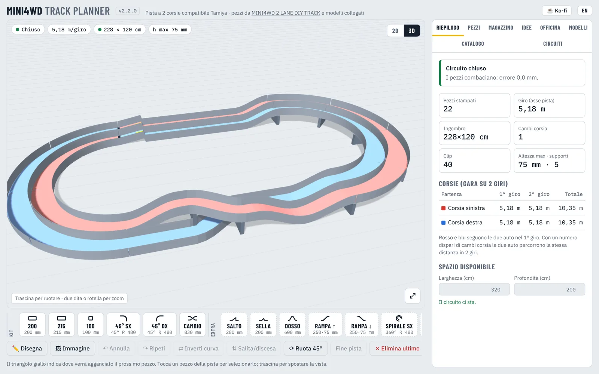
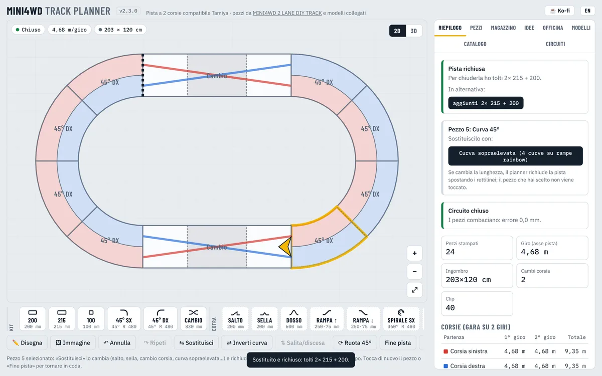
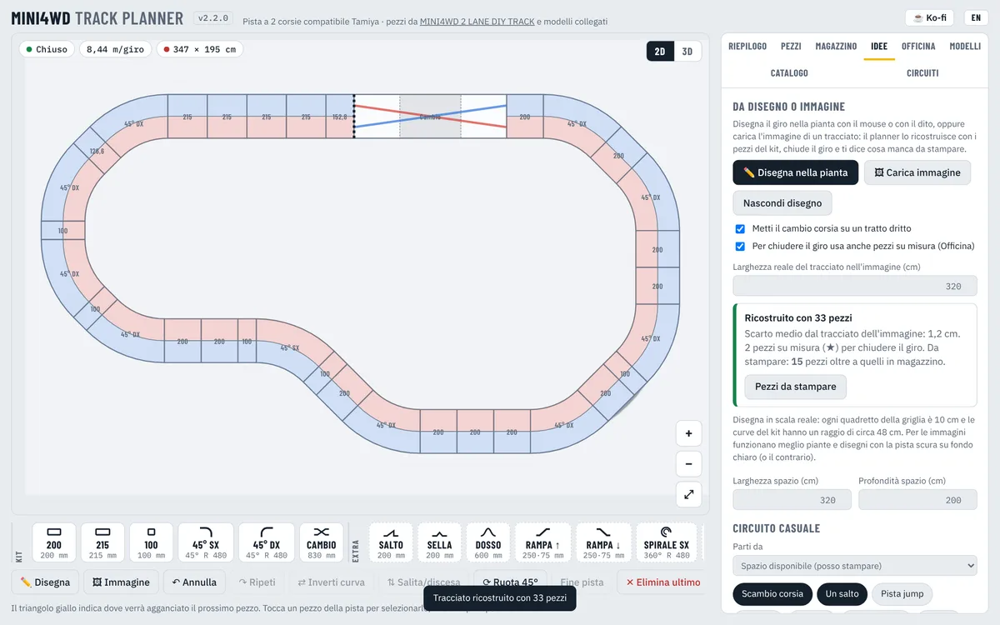
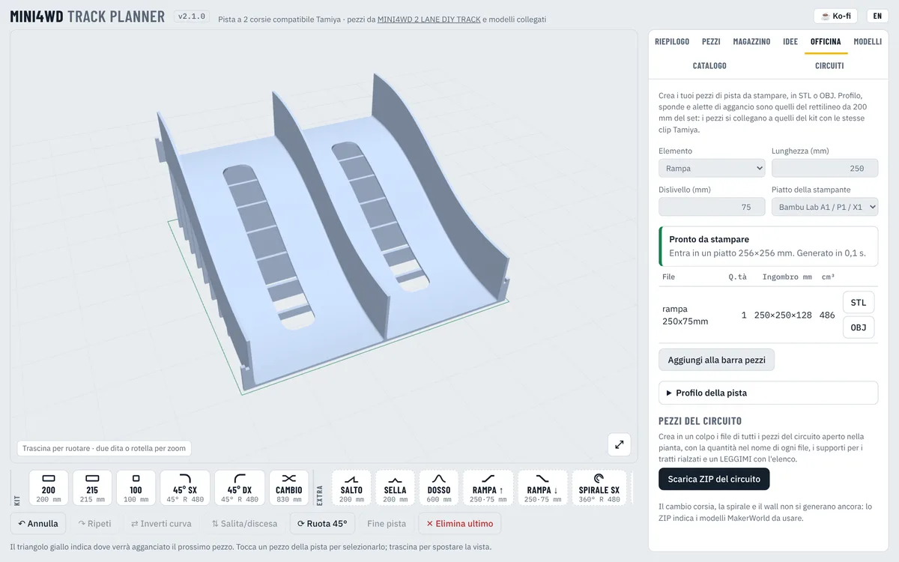
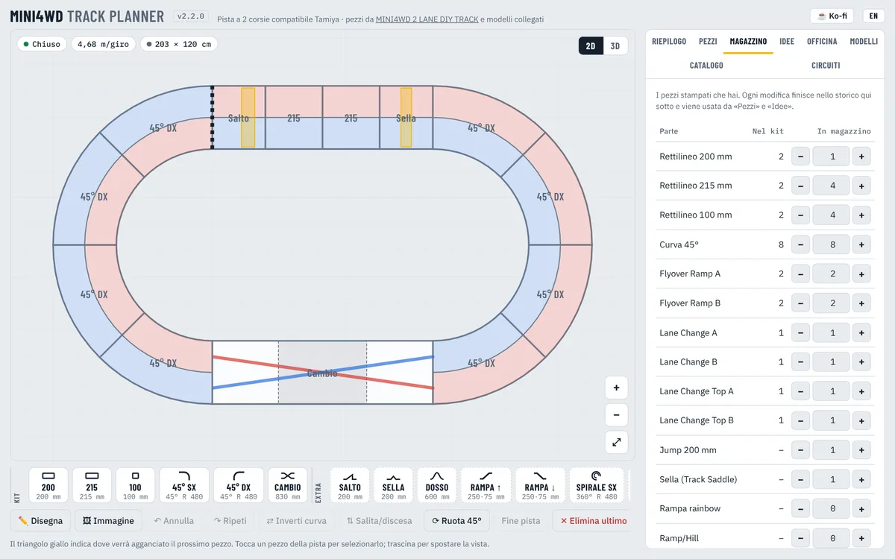
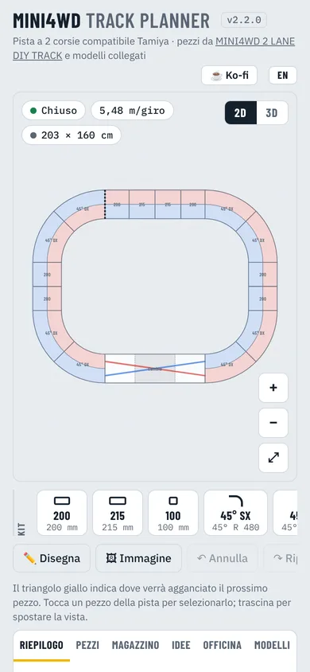

~/lab/mini4wd-track-planner $ ./open
Mini4WD Track Planner
v2.6.1 · liveProgetta piste Mini4WD a 2 corsie fatte con pezzi stampati in 3D. Vedi quanti pezzi servono, quali hai già e quante ore di stampa mancano, poi crea i tuoi pezzi in STL.

progetta, conta, stampa

Pianta e distinta
Componi il circuito pezzo per pezzo e il planner controlla tutto mentre lavori.
- Verifica di chiusura in posizione, direzione e altezza, con correzioni in un tocco: cambia, inserisci o togli un pezzo
- Seleziona un pezzo e sostituiscilo con salto, sella, cambio corsia o curva sopraelevata: la pista si richiude da sola
- Corsie della stessa lunghezza in 2 giri con il cambio corsia
- Ingombro, lunghezza del giro, altezze e supporti per i tratti rialzati
- Pezzi necessari, in magazzino e da stampare, con ore di stampa e clip

Idee
Disegnalo, carica un'immagine, digli quanto spazio hai o fagli usare solo i pezzi che possiedi.
- Disegna il giro con il mouse o con il dito, o carica l'immagine di un tracciato: viene ricostruito con i pezzi del kit e chiuso
- Tre circuiti casuali a ogni clic: ovale, ottagono, chicane, fagiolo, pista a L…
- Opzioni: scambio corsia, salto, pista jump, velocità, tecnica, sopraelevata, spirale, compatta
- Ogni tracciato si chiude, torna alla quota di partenza ed entra nello spazio
- Alternative ordinate dal più economico al più lungo che ci sta

Officina
Un motore 3D che crea pezzi di pista da stampare in STL o OBJ, senza limitarti ai modelli in rete.
- Rettilineo, curva, rampa, dosso, salto, sella, washboard e supporti
- Profilo misurato sul rettilineo da 200 mm del kit: stesse clip Tamiya
- I pezzi troppo grandi per il piatto vengono divisi in parti uguali, ognuna con le sue alette
- Un unico ZIP con tutti i pezzi del circuito e un LEGGIMI

Magazzino
Tiene i pezzi stampati che hai, con lo storico di ogni movimento.
- + e − o scrivi la quantità; un kit base completo in un clic
- Storico con data, quantità e motivo
- Usato dalla distinta e da tutti i generatori
I pezzi base vengono da MINI4WD 2 LANE DIY TRACK di Pat su MakerWorld; salto, sella, dosso, rampa rainbow, spirale e wall da altri autori di MakerWorld. L'app contiene solo i link ai loro modelli.
Inizia
Nel browser
- Premi «Apri nel browser» qui sopra. Funziona su computer, tablet e telefono.
- Aggiungilo alla schermata Home o al Dock per usarlo come un'app.
- Circuito e magazzino restano in quel browser: Circuiti → Copia JSON per spostarli.
App per Mac e Windows
- Scarica il
.dmg(Mac, Intel e Apple Silicon) o l'.exe(installer o portable) dall'ultima release. - Funziona offline.
- Primo avvio su Mac: tasto destro → Apri. Su Windows: Ulteriori informazioni → Esegui comunque.

Da telefono
La stessa app sul telefono: pianta con pan e zoom a due dita, barra dei pezzi scorrevole, italiano o inglese con il pulsante IT / EN.
Mini4WD Track Planner è gratis e open source (MIT). Se ti è utile puoi offrirmi un caffè: aiuta a pagare il tempo e il filamento delle stampe di prova.
☕ Sostieni su Ko-fiNon sono un programmatore. Ho progettato Track Planner per la mia pista Mini4WD e l'ho realizzato con l'AI (Claude): io decido cosa deve fare e lo provo a casa, l'AI scrive il codice. Issue e pull request sono benvenute su GitHub.